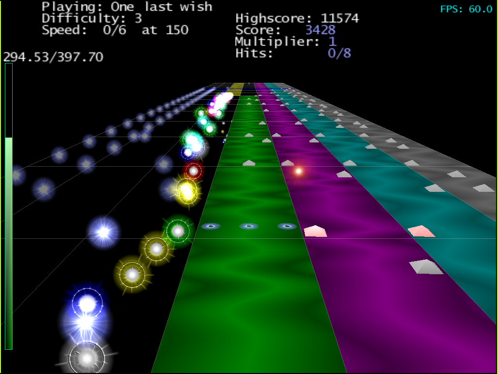

This is the page for Marfitude, a totally awesome cool game that you want to play. It's based off a game called Amplitude for the Playstation 2, which is totally awesomer and cooler, so you should play that first. But this game is cool too because it uses MOD files, which make anything rockin'.
New release of Marfitude! Here's some cool new features:
In theory, the source compiles for Linux, FreeBSD, Darwin, and cross compiles to Windows with MinGW - in theory. There's no configure script, just run 'tup' from the top level and watch it break. You also need to have SDL and SDL-image installed before it will work. Get them from http://www.libsdl.org, which is an awesome site. The game uses SDL-mixer too, but that is included with the download since it was edited to play more MODs.
Eg:
$ git clone https://github.com/gittup/marfitude $ tup $ cd bin $ ./marfitude $ echo 'Wow, that was the greatest game ever!'
Notice how there are no longer completely counter-intuitive and uncomfortable default button settings. You'll be asked to set them when you start for the first time. You can change them later in the Configure menu. Also notice how Marfitude lets you express yourself by choosing your own button style of play. This is just one reason why Marfitude rocks.
| Button | What It Is |
| Left | Left (use in the game) |
| Right | Right (use in the game) |
| Up | Up (use in the menu) |
| Down | Down (use in the menu) |
| Laser 1 | Magic Laser on the left! |
| Laser 2 | Magic Laser in the middle! |
| Laser 3 | Magic Laser on the right! |
| Repeat | Magic Laser Repeater McDoo! |
| Repeat | Haha, I made a funny. Get it? Yeah, me neither. |
| Shift | Shift is the shifter. Hold shift+laser to fire two lasers. Hold shift+left/right to move all the way left and right. Hold shift+up/down to do a pageup/pagedown. Hold shift+laser while selecting a song to pick a random song. Man, the Shifter is so super-cool. |
| Select | Selects between the song menu and the scene view thinger menu. You'll know what I'm talking about when you see it. Until then, it's ok to be confused. I am. |
| Menu | Toggle Menu/Game. Note I said toggle. That means if you're in the menu and press Menu, you leave the menu. If you want to access stuff in the menu, use a laser. That's right, Marfitude lets you use lasers in a menu. Who else does that? Nobody. Just keep in mind the lasers are so super-fast in the menu that you don't see them. But they're there. |
"marfitude....nice!"
G-Face Capone - The Heart Stopper
"sweeet :-) it's quality, man"
DJ Too-Dope Extreme McThor-Dizzle
"dude your website sucks"
Big V
"this sounds just like the real song!"
McHriss, playing basket.s3m with one track exploded
"ok you need to insert some warning into your game about stopping every so often to eat and sleep"
Bragginator
<enthalpyX> this is an AWESOME game.
<oblio> Is this a joke? I don't understand.
http://bordom.net/view/3393
"Update marfitude source"
JAM
It's a beat matching game - you hit buttons to play along with music. If you like music but playing an instrument is hard for you, you'll love this game because there's only like three buttons. Also you get points.
|  |
You have to shoot the grey dots with your lasers to make music, just like in real life. You have three lasers, and you shoot the dot when the dot goes over your blue target thing. Set up your laser buttons in the configuration menu. Laser 1 is on the left, Laser 3 is on the right. Also, Laser 2 is in the middle. Also also, you can use the repeat button and it will shoot the last laser geshotten (that's German for "is shooted"). So if you press like "1, repeat, 2" it's the same as "1, 1, 2". You can also use left and right to move between the tracks. You should only move to the next track when the one you're on explodes in a mad crazy explosion of things. That's when you get points. You can also leave the track if you don't like it or if it's tough. The up and down buttons only work in the menu.
To download faster. Also, I don't know if I would have to ask each MOD artist if I'm allowed to include it. I asked the one dude who made the song that's in there, but haven't heard back from him. If I hear otherwise I'll remove it :). Anyways, here's a list of cool songs at http://www.modarchive.com that I like to play and are cool. Just download them, unzip them, and put them in the music directory. (Mac users: Ctrl-click Marfitude, then open up Contents -> MacOS -> music). Let me know if you find any other cool songs, but that shouldn't be hard since all MODs are cool.
Did you look in the Options menu? Of course not. If you did, you wouldn't Frequently Ask this Question! So if you go there now, you can change the screen size. The screen will actually resize when you leave the Options menu. You can even make it huge by using Marfitude's Too-Cool FullScreen Ambiview Technology®! You saw it here first, folks. Everyone else is just a lame copycat. Not a lame copycat in the "Hey, that's a totally unoriginal game concept" way, but in the "Yo jerkface, you copied Marfitude's Too-Cool FullScreen Ambiview Technology®! You're lame!" way. You know what I'm sayin'.
I think you need to get your eyes checked, mister. The graphics are awesome, just like MODs. Actually, my computer is just old and can't handle much more than what you see. Plus, I have no idea what I'm doing when it comes to graphics. It's all about the music anyway, man.
I assume you mean that the sound is popping or crackling, and not that the quality of MODs suck, since that would be impossible. Try changing the "Sound buffer [bytes]" thing in the Options menu to something higher.
Multiplayer? What the crapnutz is that? Oh, you mean Marfitude's Quadrotron-o-matrix. Yes of course. Well assuming you set up the buttons for all the players in the Configuration menu, other players can join in at any time by pressing their Menu button. With more than one person in the game, you can leave by pressing Menu and then selecting Leave. I'm not quite sure how I made that so super-cool, but I did.
Marfitude was made because I had no job and decided I would make a video game, because video games are awesome. I wasn't gonna name it Marfitude - it was originally just called 'gmae', and it was gonna be an RPG. But then I ended up with this game instead (it's not an RPG). Then my friend G-Face Capone - The Heart Stopper came to play volleyball on my birthday and then he played the game and called it Marfitude after me, Marf, and the game's likeness, Amplitude.
I think it looks funny
It's not because my game is awesome (though it is awesome), it's because all these things are awesome:
Simple - donate! Well, not to me, per se, since on the planet Marfalomew moneyz has no meaning. But, here on Earth (I'm told), these fine places could use your help:
Then send the following information in email to marfey, which is at gmail.com (shhh...secrets!)
Once you donate, you too can be as cool as all the MODs in the world put together!